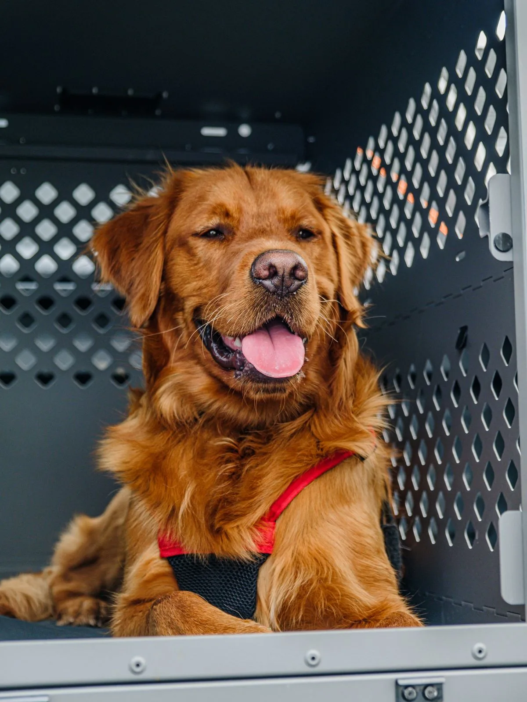

Ngày đầu tiên đón chó mèo về nhà: làm quen nhà mới từng bước
Tác giả: Ruler
Ngày đầu tiên đón chó hoặc mèo về nhà thường là ngày vừa vui vừa mệt nhất của người mới nuôi. Bạn đã chuẩn bị bát ăn, chỗ ngủ và khay vệ sinh, nhưng bạn nhỏ thì chưa biết nhà này là nhà của mình. Nó có thể chạy khắp nhà để ngửi mọi góc, cũng có thể chui vào một góc và không chịu ra suốt nhiều giờ. Cả hai phản ứng đều bình thường. Điều quan trọng trong ngày đầu không phải là dạy pet thật nhiều thứ, mà là để nó cảm thấy an toàn, ăn được, uống được, ngủ được và đi vệ sinh được ở nơi mới.
Bài viết này giúp người mới nuôi trả lời câu hỏi "ngày đầu tiên nên làm gì, theo thứ tự nào" bằng một lịch trình chia theo từng khoảng trong ngày, tách riêng cho chó và mèo ở những chỗ hai loài khác nhau. Cách sắp xếp theo buổi — trước khi về, lúc vừa về, buổi chiều, buổi tối và đêm đầu tiên — là cách sắp xếp riêng của bài viết, dựa trên các hướng dẫn của ASPCA, American Kennel Club (AKC) và Hiệp hội Thú y Hoa Kỳ (AVMA). Danh sách đồ dùng cần mua trước ngày đón đã viết đầy đủ ở checklist đồ dùng cần mua trước khi đón chó/mèo về nhà, bài này chỉ nói cách dùng những thứ đó trong ngày đầu tiên.
Lưu ý chung cho cả bài: thông tin ở đây chỉ mang tính tham khảo chung, không thay thế tư vấn của bác sĩ thú y. Nếu thú cưng bỏ ăn kéo dài, nôn, tiêu chảy, khó thở, mệt lả hoặc có dấu hiệu bất thường khác, hãy liên hệ bác sĩ thú y ngay. Lịch tiêm phòng và tẩy giun đầy đủ viết ở Lịch tiêm phòng và tẩy giun cho chó mèo con, bài này chỉ nhắc việc đặt lịch khám đầu tiên.
Ngày đầu tiên thường diễn ra như thế nào
Hầu hết chó mèo mới về đều trải qua ba trạng thái trong ngày đầu: cảnh giác, thăm dò rồi mệt và ngủ. Lúc mới bước vào nhà, nhiều con đi chậm, tai cụp, đuôi thấp, ngửi từng góc và giật mình với tiếng động lạ. Sau một vài giờ, khi đã ngửi quen mùi nhà và thấy không có gì đe dọa, chúng bắt đầu đi lại tự tin hơn, ăn một ít và tìm chỗ nằm. Đến tối, nhiều con ngủ rất nhiều vì cả ngày đã căng thẳng và mệt. Bạn không cần lo nếu pet không chơi đùa ngay ngày đầu. Chơi đùa là dấu hiệu của sự thoải mái, và sự thoải mái cần thời gian để hình thành.
Với chó con, ngày đầu thường ồn ào hơn: nó có thể rên khi xa mẹ và anh chị em cùng lứa, đi vệ sinh sai chỗ vì chưa biết phải đi ở đâu, và gặm mọi thứ trong tầm miệng. Với mèo con, ngày đầu thường lặng lẽ hơn: nó có thể trốn dưới gầm giường hoặc trong tủ quần áo, chỉ ra ngoài khi nhà yên tĩnh. Với chó hoặc mèo trưởng thành được nhận nuôi, ngày đầu có thể xen kẽ cả hai kiểu: lúc thì quấn người, lúc thì lảng tránh. Tất cả đều là cách pet tự điều chỉnh với môi trường mới, không phải dấu hiệu cho thấy bạn đã làm sai điều gì.
Một sai lầm phổ biến là cố gắng "bù đắp" cho pet bằng cách cho thật nhiều người tới gặp, cho thật nhiều đồ chơi mới và dắt đi thật nhiều nơi ngay ngày đầu. Ý tốt, nhưng kết quả thường ngược lại: pet bị quá tải và càng sợ. Nguyên tắc của ngày đầu là ít mà chắc: ít người, ít phòng, ít thay đổi. Một căn phòng yên tĩnh, một lịch sinh hoạt ổn định và một người chăm sóc chính là đủ cho ngày đầu tiên.
Trước khi đón: chuẩn bị phòng an toàn
Phòng an toàn là nơi pet ở trong ngày đầu, và là nơi nó có thể quay về mỗi khi sợ. Với chó, phòng an toàn có thể là một phòng nhỏ có chuồng đặt ở góc, kèm bát nước, vài món đồ chơi và tấm lót vệ sinh nếu là chó con chưa quen đi ngoài. Với mèo, phòng an toàn cần thêm khay vệ sinh, trụ cào nhỏ và một chỗ trốn kín như hộp carton có lối ra vào hoặc giường có mái che. Cửa phòng nên đóng hoặc chắn lại trong ngày đầu, để pet không đi lạc sang các phòng khác khi bạn không để mắt tới.
ASPCA khuyên người mới nuôi tạo một không gian an toàn cho chó mới về: chuồng có che phủ, đặt ở góc yên tĩnh, ít người qua lại, để chó có chỗ rút lui khi mệt. Hướng dẫn này không chỉ đúng với chó con mà còn đúng với chó trưởng thành mới được nhận nuôi. Bạn không cần mua chuồng đắt tiền, điều quan trọng là chỗ đó yên tĩnh, khô ráo, tránh gió lùa và tránh gần bếp hay chỗ ồn ào. Đặt một chiếc khăn hoặc tấm lót có mùi quen thuộc từ nơi cũ vào trong chuồng, nếu người giao pet cho bạn, vì mùi quen thuộc giúp pet bình tĩnh nhanh hơn mùi mới hoàn toàn.
AKC khuyên người chuẩn bị đón chó con nên dọn nhà ở tầm mắt của chó con trước khi đón: quỳ xuống và nhìn quanh ở độ cao của pet để thấy dây điện, vật nhỏ, thuốc và hóa chất mà khi đứng bạn không để ý. Cách kiểm tra này mất vài phút nhưng giúp bạn phát hiện những thứ pet có thể gặm hoặc nuốt trong ngày đầu, khi bạn còn chưa quen mắt với việc để ý pet. Với nhà có mèo, bạn cần kiểm tra thêm cửa sổ và ban công: lưới chắn phải chắc chắn, cửa sổ không mở hé đủ rộng để mèo chui ra. Mèo mới về thường tò mò với cửa sổ, và một cú trượt chân từ tầng cao có thể gây thương tích nặng.
Trong phòng an toàn, bạn nên chuẩn bị sẵn bát nước sạch, bát ăn, chỗ ngủ và khay vệ sinh hoặc tấm lót vệ sinh trước khi pet bước vào nhà. Đừng để pet chờ trong khi bạn còn đang đi tìm bát ăn. Đồng thời, hãy cất kỹ những thứ nguy hiểm ra khỏi tầm với trong toàn bộ khu vực pet được đi lại: thuốc của người, hóa chất tẩy rửa, dây điện lỏng, đồ vật nhỏ dễ nuốt, và các món thức ăn của người có thể gây hại cho chó mèo. Danh sách thức ăn độc đầy đủ đã viết ở Thức ăn của người gây độc cho chó mèo, ngày đầu bạn chỉ cần nhớ một nguyên tắc: không cho pet ăn bất cứ món gì của người khi chưa biết chắc món đó an toàn.
Cuối cùng, trước khi đón, hãy tìm sẵn bác sĩ thú y và phòng khám cấp cứu gần nhất, lưu số điện thoại vào điện thoại của bạn. AKC khuyên người mới nuôi nên tìm bác sĩ thú y trước khi đón chó con về, chứ không đợi đến khi pet ốm mới đi tìm. Bạn cũng nên hỏi người giao pet về hồ sơ sức khỏe cũ: pet đã tiêm những mũi nào, đã tẩy giun chưa, đang ăn loại thức ăn nào, có sợ tiếng ồn hay có thói quen đặc biệt nào không. Mang theo những thông tin này tới buổi khám đầu tiên sẽ giúp bác sĩ thú y hiểu nhanh về pet của bạn.
Chuyến đi về nhà: ngắn, yên tĩnh và an toàn
Chuyến đi từ trại, trạm cứu hộ hay nhà người chủ cũ về nhà bạn là lần di chuyển đầu tiên của pet tới nơi lạ, nên hãy giữ cho chuyến đi càng ngắn và yên tĩnh càng tốt. Với chó, bạn nên dùng dây dắt và vòng cổ vừa vặn, hoặc lồng vận chuyển nếu chó còn nhỏ và chưa quen đi xe. Với mèo, lồng vận chuyển là lựa chọn an toàn hơn hẳn so với bế trên tay, vì mèo sợ có thể giãy mạnh và chạy mất khi bạn mở cửa xe. Đặt lồng ở ghế sau, cố định để lồng không trượt khi xe rẽ, và phủ một chiếc khăn mỏng lên lồng nếu mèo có vẻ sợ ánh sáng và tiếng ồn.
Trong xe, bạn nên nói chuyện nhẹ nhàng, không bật nhạc lớn, không để nhiều người cùng nói chuyện với pet một lúc. Nếu chuyến đi dài, bạn có thể dừng lại để cho chó đi vệ sinh, nhưng đừng dừng ở nơi đông người hay đông chó lạ trong ngày đầu. Với mèo, bạn không cần mở lồng giữa đường, trừ khi chuyến đi quá dài và mèo có dấu hiệu quá mệt. Khi về tới nhà, hãy đưa pet thẳng vào phòng an toàn, mở cửa lồng và để pet tự bước ra theo tốc độ của nó. Đừng kéo pet ra khỏi lồng, đừng bế pet đi khoe khắp nhà ngay. Hãy để pet tự ngửi phòng an toàn trước, uống nước, rồi mới từ từ khám phá thêm.
Một chi tiết nhỏ nhưng quan trọng: trong ngày đầu, hãy giữ nguyên mùi quen thuộc càng nhiều càng tốt. Nếu người giao pet cho bạn một chiếc khăn, một món đồ chơi hay một ít thức ăn cũ, hãy đặt những thứ đó trong phòng an toàn. Mùi quen thuộc là "điểm tựa" giúp pet nhận ra có thứ gì đó không thay đổi giữa quá nhiều thứ mới. Ngược lại, đừng giặt sạch mọi thứ ngay ngày đầu, đừng xịt nước hoa hay chất khử mùi mạnh trong phòng an toàn, vì mùi lạ nồng có thể khiến pet càng căng thẳng.
Ăn uống ngày đầu: giữ nguyên thức ăn cũ
Nguyên tắc quan trọng nhất về ăn uống trong ngày đầu là giữ nguyên loại thức ăn mà pet đã ăn ở nơi cũ. Hệ tiêu hóa của chó mèo rất nhạy cảm với thay đổi đột ngột, và ngày đầu vốn đã đủ căng thẳng. Đổi thức ăn ngay ngày đầu dễ khiến pet nôn hoặc tiêu chảy, và bạn sẽ khó biết nguyên nhân là do thức ăn mới hay do căng thẳng. Hãy hỏi trước người giao pet xem pet đang ăn loại nào, mua đủ cho ít nhất hai tuần, rồi mới tính chuyện đổi dần sau đó, theo hướng dẫn của bác sĩ thú y.
Bữa ăn đầu tiên nên là một phần vừa phải, không quá nhiều. Một số con ăn ngấu nghiến vì lo lắng, một số con không ăn gì trong vài giờ đầu. Cả hai đều có thể xảy ra và thường tự ổn định sau một ngày. Bạn nên đặt bát ăn ở chỗ yên tĩnh trong phòng an toàn, để pet ăn một mình mà không bị nhìn chằm chằm. Với chó con, bạn có thể ngồi cách xa một chút để nó yên tâm. Với mèo mới về, bạn nên đặt bát ăn gần chỗ trốn của nó, vì mèo sợ thường không dám đi xa để ăn. Nước sạch thì luôn phải có sẵn, đặt ở chỗ pet dễ tới, và bạn nên kiểm tra xem bát nước có bị đổ hay hết nước không sau mỗi vài giờ.
Bạn không nên cho pet ăn vặt hay thức ăn của người trong ngày đầu, dù pet nhìn bạn với ánh mắt rất đáng thương. Thức ăn của người có thể gây hại cho chó mèo, và ngày đầu không phải lúc để thử món mới. Nếu bạn muốn thưởng cho pet vì nó đã dạn dĩ hơn, hãy dùng chính thức ăn thường ngày của nó, cho từng hạt một như phần thưởng, thay vì cho một món hoàn toàn mới. Cách này vừa an toàn cho tiêu hóa, vừa giúp pet gắn việc ngoan ngoãn với điều tích cực.
Nếu pet không ăn gì trong ngày đầu, bạn hãy quan sát thêm các dấu hiệu khác: nó có uống nước không, có đi vệ sinh không, có tỉnh táo khi bạn gọi không. Một con pet chỉ bỏ một bữa nhưng vẫn uống nước, vẫn đi lại và vẫn phản ứng với bạn thường không đáng lo bằng một con vừa bỏ ăn vừa mệt lả và không uống nước. Tuy nhiên, theo khuyến nghị chung, với chó mèo con còn rất nhỏ, việc bỏ ăn kéo dài cần được bác sĩ thú y đánh giá sớm, vì cơ thể con non mất nước và hạ đường huyết nhanh hơn con trưởng thành. Khi bạn không chắc, hãy gọi điện hỏi bác sĩ thú y thay vì chờ thêm một ngày nữa.
Đi vệ sinh và giấc ngủ đêm đầu tiên
Đi vệ sinh là việc pet cần học lại ở nhà mới, và ngày đầu bạn nên coi việc đi sai chỗ là bình thường. Với chó con, bạn nên dắt ra ngoài hoặc ra chỗ vệ sinh đã định sau mỗi bữa ăn, sau khi ngủ dậy và sau khi chơi, vì đó là những lúc chó con dễ đi vệ sinh nhất. Khi nó đi đúng chỗ, hãy khen nhẹ nhàng ngay lúc đó. Khi nó đi sai chỗ, bạn chỉ cần dọn sạch bằng chất tẩy rửa khử mùi an toàn cho thú cưng, không nên quát mắng hay phạt, vì phạt sau khi việc đã xảy ra không giúp pet hiểu phải đi ở đâu, mà chỉ khiến nó sợ bạn và lần sau đi vệ sinh ở chỗ kín hơn.
Với mèo, khay vệ sinh nên đặt ở góc yên tĩnh trong phòng an toàn, xa bát ăn và bát nước, và bạn nên dùng đúng loại cát mà mèo đã quen nếu biết. Mèo mới về có thể không đi vệ sinh trong nhiều giờ đầu vì căng thẳng, điều này thường tự hết khi mèo đã quen phòng. Bạn nên dọn khay mỗi ngày, vì nhiều con mèo từ chối dùng khay bẩn. Nếu nhà bạn có nhiều tầng hoặc nhiều mèo, bạn sẽ cần nhiều khay hơn, nhưng trong ngày đầu, một khay sạch trong phòng an toàn là đủ.
Đêm đầu tiên, nhiều chó con rên hoặc sủa khi xa mẹ và anh chị em cùng lứa. ASPCA khuyên người mới nuôi không nên để chó con một mình trong 48 giờ đầu tiên, và điều này đặc biệt đúng vào đêm đầu tiên. Bạn nên đặt chuồng hoặc chỗ ngủ của chó con gần giường bạn trong một hoặc hai đêm đầu, để nó nghe thấy tiếng bạn và biết bạn ở gần. Một chiếc đồng hồ tích tắc bọc trong khăn, hoặc một món đồ có mùi quen thuộc, đôi khi giúp chó con dễ ngủ hơn, nhưng không có cách nào đảm bảo chó con sẽ ngủ yên ngay đêm đầu. Bạn nên chuẩn bị tinh thần rằng đêm đầu có thể bị thức giấc vài lần, và đó là một phần bình thường của việc đón pet mới.
Với mèo, đêm đầu thường yên tĩnh hơn, nhưng bạn nên để cửa phòng an toàn khép hờ hoặc mở hé nếu mèo đã quen phòng, để nó có thể ra ngoài khám phá khi nhà yên tĩnh. Bạn cũng nên để sẵn bát nước và khay vệ sinh trong tầm với của mèo suốt đêm. Đừng khóa mèo trong phòng tối hoàn toàn, và đừng để mèo một mình ở ban công hay sân thượng qua đêm. Nếu mèo trốn cả đêm và không ra ăn, bạn hãy kiểm tra vào sáng hôm sau xem nó có uống nước và đi vệ sinh không, rồi mới quyết định có cần gọi bác sĩ thú y hay không.
Làm quen với người nhà và vật nuôi cũ
Trong ngày đầu, bạn nên giới hạn số người gặp pet. Người chăm sóc chính nên là người đầu tiên tiếp xúc, rồi mới đến các thành viên khác trong nhà, từng người một, trong không gian yên tĩnh. Với trẻ nhỏ, bạn nên dặn trước rằng pet mới về cần thời gian, không được đuổi theo, ôm chặt hay kéo đuôi pet. Trẻ nên ngồi yên, để pet tự tới ngửi, và chỉ vuốt ve nhẹ khi pet đã đứng yên. Bạn nên giám sát mọi lần tiếp xúc giữa trẻ và pet trong tuần đầu, dù pet có vẻ hiền đến đâu.
ASPCA khuyên người mới nuôi nên cho pet thời gian và không gian để quan sát, và không ép pet tiếp xúc với người hay vật nuôi khác khi nó chưa sẵn sàng. Lời khuyên này đặc biệt quan trọng khi nhà bạn đã có một con chó hoặc mèo. Trong ngày đầu, hai con nên ở riêng hoàn toàn, ăn riêng, ngủ riêng và dùng đồ riêng. Bạn nên cho chúng ngửi mùi của nhau qua một chiếc khăn trước, rồi mới cho nhìn thấy nhau qua cửa chắn hoặc lồng, trong thời gian ngắn và có giám sát. Nếu một trong hai con gầm gừ, xù lông hoặc cố gắng tấn công, bạn nên tách chúng ra ngay và thử lại vào ngày hôm sau, chậm hơn. Việc làm quen giữa hai con vật có thể mất vài ngày, thậm chí vài tuần, và bạn không nên vội vàng chỉ vì muốn chúng chơi với nhau ngay.
Với chó và mèo sống chung một nhà, bạn cần chuẩn bị thêm đường thoát cho mèo: kệ cao, giá sách chắc chắn hoặc phòng riêng mà chó không vào được. Mèo cần chỗ cao để quan sát và rút lui khi cảm thấy bị đe dọa, và việc có đường thoát giúp mèo bình tĩnh hơn rất nhiều. Bạn cũng nên đặt khay vệ sinh của mèo ở nơi chó không tới được, vì nhiều con chó thích ăn cát vệ sinh của mèo, và điều này vừa mất vệ sinh vừa có thể gây hại cho chó. Những chi tiết này nghe có vẻ nhỏ, nhưng chúng quyết định rất nhiều đến việc hai con có sống chung hòa thuận hay không trong những tuần sau đó.
Bạn cũng nên hoãn những việc chăm sóc có thể gây căng thẳng trong ngày đầu. ASPCA khuyên người mới nuôi nên hoãn cắt móng hoặc tắm cho chó mới về trong lần đầu tiên, để pet có thời gian làm quen với bạn trước khi phải chịu thêm một trải nghiệm lạ. Tắm và chải lông đầy đủ đã viết ở Tắm, chải lông và vệ sinh tai, móng cho chó mèo tại nhà, ngày đầu bạn chỉ cần lau nhẹ bằng khăn ẩm nếu pet bị bẩn trên đường về, và để việc tắm, cắt móng lại cho những ngày sau, khi pet đã tin bạn hơn.
Khi nào cần gọi bác sĩ thú y trong ngày đầu
Ngày đầu tiên là lúc bạn cần quan sát kỹ nhất, vì bạn chưa biết "bình thường" của pet là như thế nào. Bạn nên ghi lại vài điều đơn giản: pet ăn bao nhiêu, uống nước không, đi vệ sinh mấy lần, ngủ ở đâu và tỉnh táo ra sao. Những ghi chép này rất hữu ích khi bạn đưa pet đi khám lần đầu, vì bác sĩ thú y sẽ hỏi về ăn uống, đi vệ sinh và hành vi của pet trong những ngày đầu. Mẫu nhật ký theo dõi hằng ngày có sẵn trong file mẫu tải in của website, bạn có thể dùng ngay từ ngày đầu tiên.
Bạn nên gọi bác sĩ thú y ngay trong ngày đầu nếu pet có một trong các dấu hiệu sau: khó thở, nôn nhiều lần, tiêu chảy ra máu, mệt lả không đứng dậy được, co giật, chảy máu, hoặc nghi ngờ ăn phải chất độc. Đây không phải là chẩn đoán bệnh, mà là những dấu hiệu chung mà bất kỳ người nuôi nào cũng nên coi là khẩn cấp và đưa pet tới phòng khám gần nhất. Nếu pet chỉ bỏ một bữa ăn nhưng vẫn uống nước và vẫn tỉnh táo, bạn có thể theo dõi thêm vài giờ và gọi điện hỏi bác sĩ thú y để được hướng dẫn, thay vì tự đoán bệnh hay tự cho pet uống thuốc của người. Thuốc của người có thể gây hại cho chó mèo, và bạn tuyệt đối không tự cho pet uống thuốc khi chưa có hướng dẫn của bác sĩ thú y.
Bạn cũng nên đặt lịch khám đầu tiên trong vài ngày đầu sau khi đón pet, ngay cả khi pet trông khỏe mạnh. Buổi khám đầu tiên giúp bác sĩ thú y kiểm tra tổng thể, đối chiếu hồ sơ tiêm và tẩy giun cũ, và lập lịch tiêm, tẩy giun phù hợp với tuổi và tình trạng của pet. AVMA khuyên người nuôi cung cấp dịch vụ chăm sóc sức khỏe cho pet để bảo vệ sức khỏe, an toàn và phúc lợi của chúng, và buổi khám đầu tiên là bước đầu tiên của việc chăm sóc đó. Khi đi khám, bạn nên mang theo hồ sơ cũ, mẫu thức ăn đang dùng và danh sách câu hỏi của bạn, để buổi khám ngắn nhưng đủ thông tin.
Bảng lịch 7 ngày đầu: làm quen từng bước
Bảng dưới đây là khung tự làm của bài viết, giúp bạn hình dung ngày đầu nằm ở đâu trong tuần đầu tiên. Bạn không cần làm đúng từng ngày, chỉ cần giữ đúng thứ tự: an toàn trước, làm quen sau, mở rộng dần.
| Thời gian | Việc chính | Ghi chú |
|---|---|---|
| Trước khi đón | Dọn phòng an toàn, chuẩn bị bát ăn, nước, chỗ ngủ, khay vệ sinh, lưu số bác sĩ thú y | Dọn nhà ở tầm mắt pet, cất thuốc và hóa chất |
| Ngày 1 | Đưa pet vào phòng an toàn, giữ nguyên thức ăn cũ, cho ăn vừa phải, quan sát ăn uống và đi vệ sinh | Không để chó con một mình trong 48 giờ đầu, hoãn tắm và cắt móng |
| Ngày 2–3 | Giữ lịch ăn, ngủ và đi vệ sinh ổn định, cho pet gặp thêm từng thành viên trong nhà | Pet vẫn có thể trốn hoặc rên, đó là phản ứng bình thường |
| Ngày 4–5 | Mở thêm một phòng cho pet khám phá, cho hai con vật ngửi mùi nhau qua khăn nếu nhà đã có pet | Tách ngay nếu một trong hai con tỏ ra sợ hãi hoặc hung dữ |
| Ngày 6–7 | Đưa pet đi khám đầu tiên nếu chưa khám, bắt đầu lịch chơi nhẹ và huấn luyện đơn giản | Mang hồ sơ cũ và mẫu thức ăn theo khi đi khám |
| Sau tuần 1 | Mở rộng dần khu vực pet được đi lại, bắt đầu đổi thức ăn dần nếu bác sĩ thú y đồng ý | Đổi thức ăn dần trong vài ngày, không đổi đột ngột |
Bạn có thể in bảng này ra và đánh dấu từng ngày đã làm xong, để không bỏ sót việc quan trọng trong tuần đầu bận rộn. Nếu một bước nào đó chưa xong, bạn chỉ cần lùi lại một bước và làm chậm hơn, không cần ép pet theo đúng lịch. Mỗi con vật có tốc độ làm quen khác nhau, và lịch trình tốt nhất là lịch trình mà pet của bạn cảm thấy thoải mái.
Kết luận
Ngày đầu tiên đón chó mèo về nhà không cần hoàn hảo, chỉ cần an toàn và bình tĩnh. Một phòng yên tĩnh, thức ăn quen thuộc, nước sạch, chỗ ngủ ấm và một người chăm sóc kiên nhẫn là đủ để pet bắt đầu tin tưởng nhà mới. Bạn càng ít ép pet trong ngày đầu, pet càng nhanh dạn dĩ trong những ngày sau. Nếu bạn nhớ một điều duy nhất từ bài viết này, hãy nhớ điều này: để pet tự quyết định tốc độ làm quen, và bạn chỉ cần ở đó, quan sát và hỗ trợ khi cần.
Trong tuần đầu, bạn nên tiếp tục quan sát ăn uống, đi vệ sinh và giấc ngủ của pet, giữ lịch sinh hoạt ổn định và đưa pet đi khám lần đầu. Những việc này tuy nhỏ nhưng tạo nền tảng cho nhiều năm sống chung sau này. Khi pet đã quen nhà, bạn có thể bắt đầu dạy những thói quen mới, mở rộng khu vực đi lại và làm quen dần với người lạ, từng bước một, theo tốc độ của pet.
Nguồn tham khảo
- ASPCA — Tips for a New Dog. https://www.aspca.org/pet-care/general-pet-care/tips-new-dog
- American Kennel Club (AKC) — Preparing for a New Puppy. https://www.akc.org/expert-advice/training/preparing-for-a-new-puppy/
- Hiệp hội Thú y Hoa Kỳ (AVMA) — Pet Ownership Guidelines. https://www.avma.org/resources-tools/avma-policies/pet-ownership-guidelines
- ASPCA — Supplies List for Newly Adopted Dogs. https://www.aspca.org/pet-care/general-pet-care/supplies-list-newly-adopted-dogs
